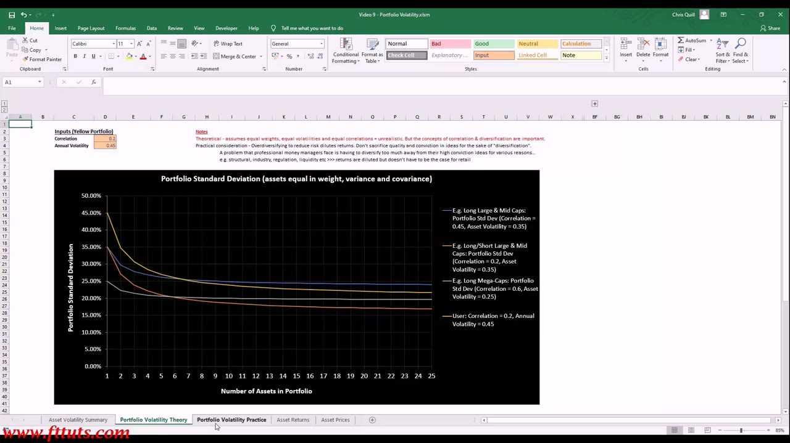
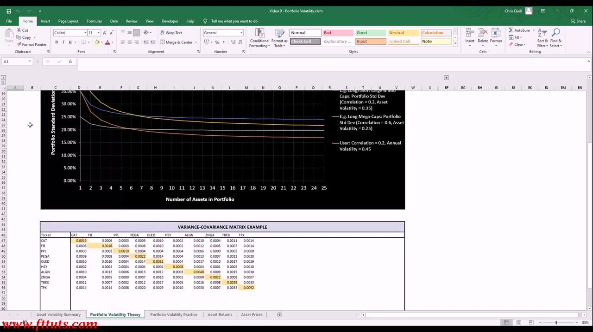
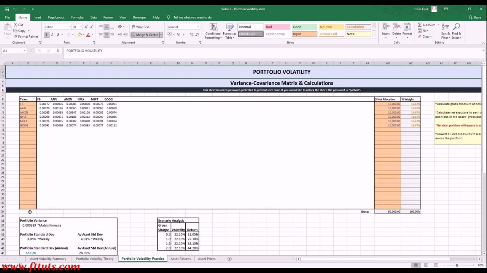
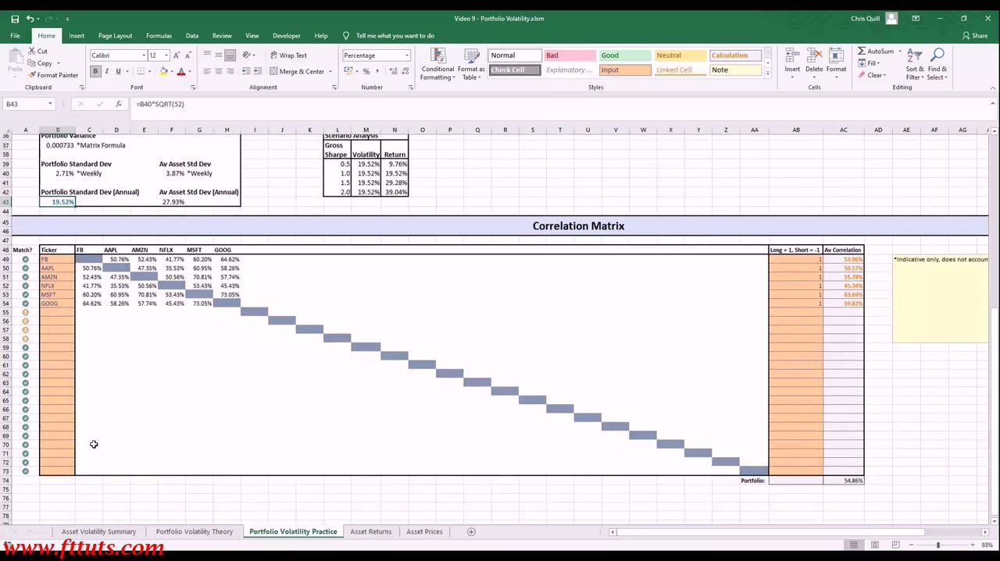
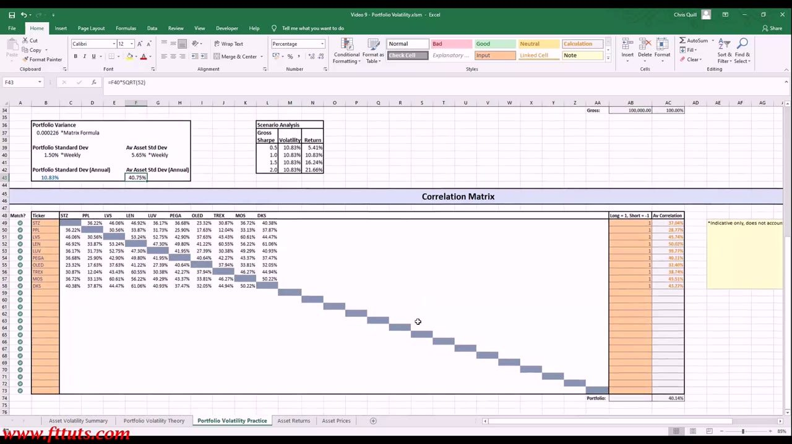
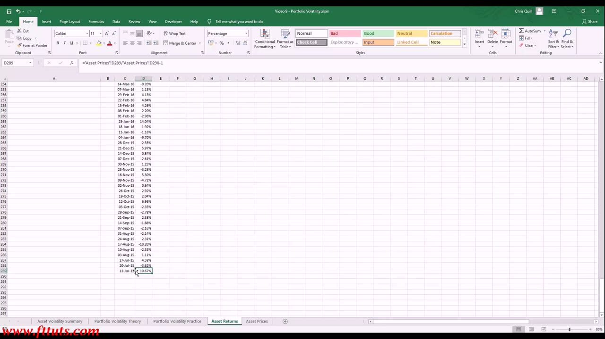

Portfolio Volatility 2
Calculating a portfolio's expected volatility yourself — the variance-covariance matrix, why correlation (not each asset's own vol) drives portfolio risk, and how going long/short collapses whole-book volatility to a quarter of the average asset's
Expected portfolio volatility is Σᵢ Σⱼ wᵢ·wⱼ·covᵢⱼ over a variance-covariance matrix (Portfolio Std Dev = √variance, annualised ×√52), so it's the correlations between positions — not the assets' own volatilities — that set portfolio risk: a 6-name mega-cap book came out at 22.10% vs 28.92% average asset vol, and running a large/mid-cap book LONG/SHORT (negative weights) collapsed it to 10.83% against a 40.75% average asset vol, the mathematical proof of why professionals run diversified long/short books.
The gist
- Expected portfolio volatility takes three inputs — position WEIGHTS (each position's exposure ÷ portfolio gross, summing to 100%, negative for shorts), each asset's VARIANCE, and every pairwise COVARIANCE — assembled into a variance-covariance matrix. Portfolio Variance = Σᵢ Σⱼ wᵢ·wⱼ·covᵢⱼ (the 'Matrix Formula'); Portfolio Std Dev = √variance; annualise a weekly figure ×√52.
- The variance-covariance matrix is symmetric: the DIAGONAL is each asset's variance (e.g. CAT 0.0019, TPX 0.0092), the OFF-DIAGONAL is each pair's covariance (e.g. CAT–FB 0.0006). Because portfolio variance sums over every pair, it's the covariances/correlations between holdings — not each asset's own vol — that primarily drive portfolio volatility.
- Diversification benefit, quantified: a 6-asset equal-weight mega-cap book (FB/AAPL/AMZN/NFLX/MSFT/GOOG, 16.67% each) came out at Portfolio Variance 0.000939 → 22.10% annual vs Average Asset Std Dev 28.92% — the portfolio is less volatile than the average of its parts because the names aren't perfectly correlated.
- Correlation is the lever. High-correlation mega-cap tech (~55% average correlation) barely diversifies (portfolio vol ~19–22% on ~28% assets); a lower-correlation large/mid-cap book (~40% average correlation) diversifies far more. Diversification benefit diminishes rapidly — the curves flatten after ~10–15 assets, so good retail traders run 8–12 high-conviction, low-correlation ideas rather than over-diversifying.
- Going LONG/SHORT is the headline move: running the same large/mid-cap names as a long/short book (mixing +$10,000 long / −$10,000 short, ±10% weights, gross unchanged at $100,000) collapsed Portfolio Variance to 0.000226 → 10.83% annual — versus a 40.75% Average Asset Std Dev, roughly ONE QUARTER — because short positions (negative weights) partially cancel the longs' risk in the covariance sum.
- Lower vol does NOT mean less profit: long/short is an all-markets absolute-return strategy (you lose less in down markets and compound ahead — recovering a 20% loss needs a 25% gain), if wrong you're usually only wrong on one side, and options' asymmetric implicit leverage restores the upside. Return ≈ gross Sharpe × volatility (good retail Sharpe ~1.5–2.0); a good trader is right ~60% / wrong ~40%, with 5–10% of trades ('home runs') generating the majority of the year's profit. To build it yourself, keep every price series on the SAME start/end dates and frequency (weekly Adjusted Close), compute returnₜ = priceₜ/priceₜ₊₁ − 1 (mind the bottom-row gotcha), and the calculator's COVARIANCE.S + INDIRECT/MATCH/ADDRESS engine rebuilds the whole matrix and portfolio vol the moment you type ticker names.
The diversification curve — correlation sets the slope and the floor
- Portfolio Volatility Theory chart: Portfolio Standard Deviation vs Number of Assets (1→25), assuming assets equal in weight, variance and covariance. Every line starts at that single asset's own volatility, then falls as assets are added — provided the new asset isn't perfectly correlated (≠ 1) with the rest.
- Grey 'Long Mega-Caps': Correlation 0.60, Asset Vol 0.25 → starts at 25%, barely falls, flattening after ~6–7 names (long-only mega caps in similar sectors).
- Blue 'Long Large & Mid Caps': Correlation 0.45, Asset Vol 0.35.
- Red 'Long/Short Large & Mid Caps': Correlation 0.20, Asset Vol 0.35 → starts higher than the mega-cap line yet ends LOWER, because the lower correlation keeps the curve declining.
- Yellow 'User' line — live inputs (e.g. Correlation 0.20, Annual Vol 0.45; lower them to 0.10 / 0.40 and the whole curve drops): lower assumed correlation pushes portfolio vol down; lower asset vol scales it down.
- Diversification benefit DIMINISHES rapidly — curves flatten after ~10–15 assets; over-diversifying to reduce risk dilutes returns, so don't sacrifice high-conviction ideas for diversification's sake.
The visual proof that correlation, not the constituents' own volatility, governs how far diversification can take you: a high-vol book of low-correlation names ends up LESS volatile than a low-vol book of highly-correlated ones. Anton restricts the model's correlation input to 0–1 here to keep the point clean; genuine negative correlations arrive later via long/short.

The variance-covariance matrix (correlation drives everything)
- The core mathematical object: a symmetric matrix over the portfolio's tickers (here CAT/FB/PPL/PEGA/OLED/HSY/ALGN/ZNGA/TREX/TPX).
- DIAGONAL = each asset's variance (e.g. CAT 0.0019, PEGA 0.0022, TPX 0.0092). OFF-DIAGONAL = the covariance between each pair (e.g. CAT–FB 0.0006). Symmetric because cov(X,Y) = cov(Y,X).
- Covariance measures the (unbounded) linear relationship between two assets; correlation is normalised covariance, bounded −1 to +1 (+1 = move together, −1 = move exactly opposite, 0 = no measurable relationship). Anton uses the terms interchangeably here.
- Portfolio variance = the weighted sum over this matrix (Σ wᵢ·wⱼ·covᵢⱼ); Portfolio Standard Deviation = √(portfolio variance). Expected vol uses a SAMPLE of past weekly returns to estimate future variance/covariance — correlations aren't fixed and can change significantly.
- This is why the covariance/correlation BETWEEN holdings — not just each asset's own vol — determines portfolio volatility, and why low correlations reduce it.
Once a portfolio holds more than a name or two the pairwise relationships swamp the individual volatilities — which is exactly why choosing low-correlation (and short) positions matters more than picking low-volatility ones.

The practice calculator — a 6-asset book and the diversification benefit
- Portfolio Volatility Practice sheet (locked, password 'portvol'). 6-asset equal-weight mega-cap book (FB, AAPL, AMZN, NFLX, MSFT, GOOG): $10,000 each → 16.67% weight each, Gross $60,000 / 100%.
- Variance-covariance matrix across the six (diagonal = variance, e.g. FB 0.00177, AMZN 0.00147; off-diagonal = covariances). Portfolio Variance = 0.000939 via the Matrix Formula.
- Portfolio Standard Dev 3.06% weekly → 22.10% annual (×√52), vs Average Asset Std Dev 4.01% weekly / 28.92% annual.
- KEY RESULT: portfolio vol 22.10% < average single-asset vol 28.92% — the diversification benefit quantified: combining imperfectly-correlated assets yields a portfolio less volatile than the average of its parts.
- Scenario Analysis (return = Sharpe × volatility, at 22.10% vol): Sharpe 0.5 → 11.05%, 1.0 → 22.10%, 1.5 → 33.15%, 2.0 → 44.20%. Give each position a dollar NET allocation (short positions are negative); all net exposures convert across the portfolio.
The 6-asset book's 22.10% sits comfortably below its 28.92% average asset vol precisely because the names aren't perfectly correlated — but they're all long mega-cap tech, so the high ~55% average correlation caps how far diversification can take this particular book.

The correlation matrix — measuring the average correlation
- A correlation matrix is added alongside the variance-covariance matrix to report every pairwise correlation and the book's average correlation. B43 =B40*SQRT(52) annualises the weekly std dev.
- For the 6-asset mega-cap book, pairwise correlations are HIGH (~45–71%; e.g. FB–AAPL 50.76%, MSFT–GOOG 73.05%) — all long mega-cap tech, so they move together.
- Per-asset Av Correlation via AC49 =IFERROR(AVERAGE(C49:AA49),""); portfolio average correlation ≈ 54.86%. A Long=1 / Short=−1 column flags each position's direction and a 'Match?' column checks the tickers line up with the matrix above.
- Expanding the book to 10–11 mega/large-cap names (adding V/DIS/NKE/CAT/ORCL) pulls portfolio vol from 22.10% down to ~18.80% (average correlation ~44.97%) — but with diminishing effect, exactly as the theory curve predicts.
- The high ~55% average correlation is what limits diversification here; a lower-correlation large/mid-cap book (~40%) would sit far lower.
Average correlation is the single lever that — together with asset vol and the number of positions — sets the whole book's volatility. This is why the matrix flags the lowest-average-correlation names: they are the most effective diversifiers.

Going long/short — the volatility collapse
- Switch to a large/mid-cap book (STZ, PPL, LVS, LEN, LUV, PEGA, OLED, TREX, MOS, DKS) — Average Asset Std Dev 40.75%, portfolio average correlation ≈ 40.14% (lower than the mega-cap cluster's ~55%, so more diversification is available).
- Run it LONG/SHORT — mix +1 long and −1 short positions (the $ Net Allocation column carries both +$10,000 long and −$10,000 short, weights of +10% / −10%, gross unchanged at $100,000).
- Result: Portfolio Variance 0.000226 → Portfolio Std Dev 1.50% weekly / 10.83% annual — versus a 40.75% Average Asset Std Dev. Portfolio vol collapses to roughly ONE QUARTER of the average single-asset vol.
- Scenario Analysis at 10.83% vol: Sharpe 0.5 → 5.41%, 1.0 → 10.83%, 1.5 → 16.24%, 2.0 → 21.66%.
- The average asset volatilities did NOT change — the entire drop comes from the covariances: short positions (negative weights) partially cancel the long positions' risk in the Σ wᵢ·wⱼ·covᵢⱼ sum. This is the mathematical proof of why professionals run diversified long/short books — carry high-vol, high-opportunity assets yet keep portfolio risk low and Sharpe high.
Nothing about the stocks changed — only their sign. Shorting injects negative relationships into the covariance sum, a far more powerful lever on portfolio volatility than simply owning lower-vol names. The negative-weight allocations in the matrix (slide 00:50:40) make the mechanism explicit.

Why lower vol still means big profit — absolute return + options leverage
- Lower volatility does NOT mean less profit. Reason 1: long/short is an all-markets ABSOLUTE-RETURN strategy — you might occasionally return less than the market but you lose less in down markets and compound ahead over time (work out what gain recovers a 20% loss: 25%).
- Reason 2: the negative correlations are a property of this historical sample; trading your own timed ideas you expect POSITIVE returns on both legs, and if wrong you're usually only wrong on one side (being wrong on both isn't pretty, but homework makes it less likely).
- Reason 3: options carry asymmetric implicit leverage — downside limited to the premium paid, unbounded upside on calls, and you control the leverage by how much premium you commit — so a modelled ~10–15% long/short book can run substantially higher effective vol if the trader desires, without proportionally magnifying the downside.
- Scenario Analysis / gross Sharpe = annualised portfolio return ÷ annualised volatility (a risk-adjusted performance measure). Very good retail traders sustain ~1.5–2.0 → on this book roughly 15–20%/yr, before options leverage.
- Trader reality: a good trader is right ~60% / wrong ~40%; ~90–95% of a year's trades net a small profit and the 5–10% 'home runs' generate the vast majority of end-of-year P&L. Conviction should scale the allocation (half vs full positions), and a bullish/bearish view tilts dollars toward the long or short side.
The book is de-risked on paper but not de-opportuned in practice: absolute-return construction keeps you compounding through all markets, and options put the leverage back — with a capped, asymmetric downside — so risk-adjusted returns actually rise.
Build it yourself — data hygiene and the dynamic engine
- The rule stated on the sheet twice: 'Time-series prices/returns for each asset must have the same start and end dates, and the same frequency.' The variance-covariance/correlation matrix only works if every series covers identical dates at identical frequency.
- Source each asset's history (e.g. from Yahoo Finance): use the ADJUSTED CLOSE column (accounts for dividends/splits), weekly frequency; sort the dates, drop any incomplete latest week, paste into the Asset Prices sheet aligned to the common date axis.
- Returns: D289 ='Asset Prices'!D289/'Asset Prices'!D290−1 — returnₜ = priceₜ / priceₜ₊₁ − 1. Watch the BOTTOM ROW: it references a price that doesn't exist below it, so it must be handled/blanked or the error propagates into the vol and correlation calcs.
- The engine: each matrix cell is =COVARIANCE.S(...) wrapped in INDIRECT/MATCH/ADDRESS/SUBSTITUTE, looking up each ticker's return column in the Asset Returns sheet by NAME — so you just type ticker symbols and the whole matrix (and portfolio vol) rebuilds automatically.
- Worked demo: a fresh 3-asset high-vol book (PYPL var 0.00183, ADSK 0.00241, AAL 0.00694; Average Asset Std Dev ~44% annual). #REF! errors in the Portfolio Variance / Std Dev / Scenario cells simply mean the $ Net Allocation / weights aren't entered yet (Gross 0.00) — they resolve once positions are sized.
The calculator is only as good as its data. Because every cell references aligned return columns, a single mismatched or misaligned series poisons the whole matrix — which is why sharing start/end dates, frequency and length is the discipline that makes the model trustworthy. Update your allocations periodically as prices (and therefore weights) drift.

Glossary
- VarianceStandard deviation squared (σ²). The diagonal of the variance-covariance matrix — each asset's own variance.
- CovarianceThe unbounded measure of the linear relationship (co-movement) between two assets. cov(X,Y) = cov(Y,X), so the matrix is symmetric. Computed here with COVARIANCE.S.
- CorrelationNormalised covariance, bounded −1 to +1. +1 = move together, −1 = move exactly opposite, 0 = no measurable relationship. Anton uses covariance and correlation interchangeably in this lesson.
- Variance-covariance matrixA symmetric grid over the portfolio's tickers: diagonal = each asset's variance, off-diagonal = each pair's covariance. The engine of expected portfolio volatility.
- Portfolio variance (Matrix Formula)Σᵢ Σⱼ wᵢ·wⱼ·covᵢⱼ — the weighted double sum over every pair in the matrix, where wᵢ are position weights (negative for shorts). Portfolio Std Dev = √(portfolio variance).
- Position weightA position's gross exposure ÷ the portfolio's gross exposure; the weights sum to 100%. A SHORT position carries a negative weight.
- AnnualisingConvert a weekly standard deviation to annual by multiplying by √52 (=B40*SQRT(52) in the sheet).
- Average correlationEach position's mean pairwise correlation with the rest of the book (AC49 =IFERROR(AVERAGE(...))), and the portfolio-wide average. The lever that — with asset vol and position count — sets portfolio volatility. Lower ⇒ lower portfolio vol.
- Diversification benefitThe portfolio ending up less volatile than the average of its parts because holdings aren't perfectly correlated (here 22.10% portfolio vs 28.92% average asset). Diminishes rapidly, flattening after ~10–15 assets.
- Long/short volatility collapseRunning a book long/short (some positions with negative weights, same stocks, gross unchanged) injects negative correlations into the covariance sum, collapsing portfolio vol (here to 10.83% vs a 40.75% average asset vol — about a quarter) while average asset vol is unchanged.
- Gross Sharpe ratioAnnualised portfolio return ÷ annualised volatility — a risk-adjusted performance measure. Return ≈ gross Sharpe × volatility. Very good retail traders sustain ~1.5–2.0.
- Return formulareturnₜ = priceₜ / priceₜ₊₁ − 1 (in the sheet's newest-first layout). The return series is one row shorter than prices; the bottom row references a non-existent prior price and must be handled.
- Data hygieneEvery price/return series must share the same start/end dates and frequency (use weekly Adjusted Close). A single mismatched series breaks the whole variance-covariance matrix.